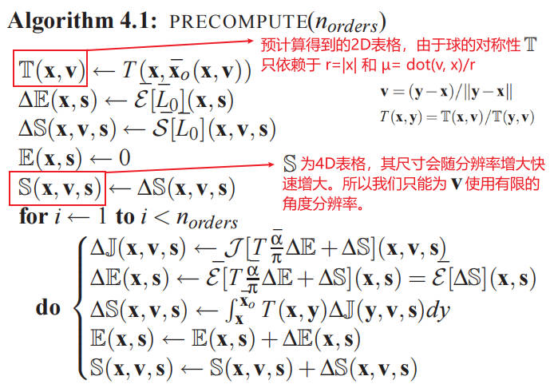

AtmosphericScattering
Table of Contents
- Basic Knowledge
- Unity Procedural Skybox
- AtmosphericScattering
- Volumetric Atmospheric Scattering
- 2008 Precomputed Atmospheric Scattering
- 2009 Rendering Parametrizable Planetary Atmospheres with Multiple Scattering in Real-Time
- Volumetric fog: Unified, compute shader based solution to atmospheric scattering
- A Scalable and Production Ready Sky and Atmosphere Rendering Technique
- 参考资料
AtmosphericScattering note.
<!– more –>
Basic Knowledge
Unity Procedural Skybox

AtmosphericScattering
Volumetric Atmospheric Scattering
Volumetric Single Scattering
单个光子射线可以被反射很多次。这意味着光到达摄像机所经过的路径可能会非常复杂。使用 raytracing 的方式来渲染半透明材质，需要模拟多个独立的光线路径，对于实时渲染来说，这样的计算消耗太昂贵了。本系列教程中使用的技术被称为 single scattering，其只考虑光射线单次散射事件。
渲染真实感天空的关键是，模拟光线经过星球的大气层所发生的事情。下图展示了一个摄像机，视线穿过了星球的大气层。渲染的基本理念是计算光从 B 传播到 A 的过程中，其如何被散射所影响。也就是说，需要计算光线传播到摄像机过程中，外散射和内散射的贡献。
依据我们的经验，外散射会导致光的衰减。在任意一点 P 处的光能量都有一定概率被反射到偏离摄像机的方向。
为了正确计算在任意 P 点，有多少外散射发生，首先我们需要知道起初在 P 点有多少光能量。假设只有一个恒星(太阳)照亮星球，P点处接收到的所有光都来自太阳。这些光能量中的一部分会被内散射，即被偶然地反射到摄像机。
考虑上面两步(从 P 到 A 外散射后剩余的部分 和 在 P 点内散射到摄像机方向增加的部分)已经足够近似观察到的大气散射现象了。但是，计算起初在 P 的光能量是比较复杂的，光线经过大气从 C 到达 P，其本身也受外散射。

2008 Precomputed Atmospheric Scattering
Atmospheric Models
渲染大气光照依赖于两个方面：一个是局部介质属性的物理模型，另一个是对到达观察者眼睛的全局照明的模拟。这包括与地面的交互，地面可以被建模为一个 Lambertian 表面，其为一个高度场，其反射率为α(x,λ)，法线为 n(x)。
Physical model
在 CG 中常用的物理模型是一个晴空万里的模型。模型基于两种成分，空气分子和气溶胶颗粒。在 Rg=6360km (地球半径 6371km)和 Rt=6420km 之间薄球面层中，这些分子和颗粒的密度会递减。
在每一点上，被散射到远离入射方向θ度的光的比例，由散射系数βs 和相位函数 P 的乘积给出。βs 取决于颗粒密度，P描述了角度的相关性。
对于空气分子，由 Rayleigh 理论可给出βs 和 P，空气分子几乎不会吸收入射光，消光系数(extinction coefficient) βe = βs
和空气分子不同，气溶胶会吸收一部分入射光。吸收部分由 βa 表示，消光系数 βe = βs + βa。
随着海拔变化，折射率的变化会导致光线有小的偏折（小于 2 度）。简单起见，我们直接忽略该影响。
Rendering equation
这里我们将回顾参与介质的渲染方程，将其应用于大气。下图是渲染方程：
下图是渲染方程相关概念的图示：
Previous rendering methods
上面公式 8 非常复杂。在计算机图形学中有很多的简化假设用于简化计算来求出近似解。大多数实时方法都会忽略多次散射。这样的话，公式 8 就可以简化为 L = L0 + R[L0] + S[L0]。但是，S[L0]求解起来也很复杂。一些作者提出了以理想化为代价的解析求解方案：具有恒定大气密度的平坦地球[HP02]，或没有米氏散射[REK∗04]。平坦地球假设限制只能在地面进行观察。否则，S[L0]通常是通过数值积分来计算的[NSTN93]，可以通过低采样来实时进行[O'N05]。一个值得注意的例外是[SFE07]，他们依赖于这个积分的预计算。然而，为了减少参数的数量，他们只考虑了视角和太阳天顶角，而忽略了视角和太阳方向之间的角度。因此，他们不能再现大气层内的地球阴影。
如上所述，忽略多重散射对白天来说是可以接受的，但对黄昏来说就不行了[HMS05]。这是因为太阳光在白天穿过的大气层要比日落或日出时少得多。因此，一些作者提出了考虑多重散射的方法。[PSS99]用分析模型拟合了双重散射蒙特卡洛模拟的结果，但他们的模型只对地面的观测者有效。[NDKY96]和[HMS05]使用体积辐射度算法来计算多重散射，但他们的方法远非实时（每幅图像几分钟到几小时）。
在本文中，我们提出了一种新的方法来实时渲染天空和空中视角，从地面到太空的所有视角，同时考虑到多重散射。该方法受到[SFE07]的启发，并在多重散射的基础上进行了扩展，加入了之前被忽略的视线-太阳角 参数，对预计算表进行了更好的参数化，并对 Light Shafts 采用了新的方法。
Our Method
为了提高效率和真实性，我们的目标是尽可能地预先计算 L，只用最小的近似值。我们的解决方案是基于对零散射和单一散射的精确计算，并使用近似的 occlusion 效果来计算多重散射。事实上，我们为零散射和单散射考虑了地面形状的细节，以便得到正确的地面颜色、阴影和 light shafts。但我们用一个反射率恒定的完美球体来近似计算多重散射，以允许预计算。
Notations
在展示我们的方法之前，我们需要一些符号和辅助函数。对于一个完美球形地面，由于球的对称性，x和 v 可以简化为一个海拔和一个视线天顶角，以 x,v,s 为参数的函数(如 L 或 S[L])就可以简化为只需 4 个参数的函数（两个参数表示 x 和 v，两个参数表示 s）。另外，L 可以被表示为一系列线性算子 R 和 S，第 i 项对应于光被反射或散射 i 次。
Zero and single scattering
在渲染中，我们精确计算 L0 和 R[L0]。为此，我们使用了一个阴影算法来计算太阳的遮挡，并且预计算透射比 T(其只依赖于两个参数, 见 Section 4)。S[L0]比较复杂，其是 x 和 x0 之间的积分，但是，由于 L0 中的遮挡项，对于在阴影中的所有点 y，该积分为空，这里我们假设阴影中的点在 xs 和 x0 之间（见 Figure 1，更一般的情况在 Section 5 讨论）。这样，积分就可以简化到照亮的线段[x, xs]上进行。并且，occlusion 可以被忽略，因为采用 xs 就是考虑了 occlusion 了。预计算 T 只需要 2 个参数，预计算 S[L0]需要 4 个参数。
Multiple scattering
如上所示，尽管有遮挡，L0 和 L1 还是可以准确计算出来。不幸的是，在其他项 L2+…=R[L∗]+S[L∗]中考虑遮挡的问题要困难得多。希望在这种情况下，occlusion 可以被近似计算。事实上，在白天，多重散射效应与单一散射相比是很小的，而在不被太阳直接照射的情况下，地面的贡献也很小。因此，我们通过对多重散射的贡献进行积分来近似 S[L∗]中的遮挡效应，而该多重散射(在 x 和 xs 之间)贡献是在没有遮挡的情况下计算的。这会产生正的和负的偏差（见图 1）。我们还对 R[L∗]中的遮挡效应进行了近似，其是由于地面的切平面而导致的水平半球的环境遮挡。
Precomputations

Angular precision
S' 为 4D 表格，其尺寸会随分辨率增大快速增大。所以我们只能为 v 使用有限的角度分辨率。这带来了一个精度问题，然而这只限于具有很强前向散射的 Mie 散射。为了解决这个问题，我们把单次的 Mie 散射项与 S' 中的所有其他散射项分开，以便在运行时应用相函数。
参考资料
- 2008 Precomputed Atmospheric Scattering en https://ebruneton.github.io/precomputed_atmospheric_scattering/
- 2008 Precomputed Atmospheric Scattering github https://github.com/ebruneton/precomputed_atmospheric_scattering
- 2008 Precomputed Atmospheric Scattering cn https://zhuanlan.zhihu.com/p/76844937
- 基于物理的大气渲染 https://zhuanlan.zhihu.com/p/36498679
2009 Rendering Parametrizable Planetary Atmospheres with Multiple Scattering in Real-Time
参考资料
- 2009 Rendering Parametrizable Planetary Atmospheres with Multiple Scattering in Real-Time cn https://zhuanlan.zhihu.com/p/345916725
Volumetric fog: Unified, compute shader based solution to atmospheric scattering
A Scalable and Production Ready Sky and Atmosphere Rendering Technique
- 2020 A Scalable and Production Ready Sky and Atmosphere Rendering Technique https://github.com/sebh/UnrealEngineSkyAtmosphere
参考资料
alan zucconi Totorials
- 1-Volumetric Atmospheric Scattering en https://www.alanzucconi.com/2017/10/10/atmospheric-scattering-1/
- 1-Volumetric Atmospheric Scattering cn https://zhuanlan.zhihu.com/p/32525403
- 2-The Theory Behind Atmospheric Scattering en https://www.alanzucconi.com/2017/10/10/atmospheric-scattering-2/
- 2-The Theory Behind Atmospheric Scattering cn https://zhuanlan.zhihu.com/p/32594753
- 3-The Mathematics of Rayleigh Scattering en https://www.alanzucconi.com/2017/10/10/atmospheric-scattering-3/
- 3-The Mathematics of Rayleigh Scattering cn https://zhuanlan.zhihu.com/p/32676375
- 4-A Journey Through the Atmosphere en https://www.alanzucconi.com/2017/10/10/atmospheric-scattering-4/
- 4-A Journey Through the Atmosphere cn https://zhuanlan.zhihu.com/p/32695071
- 5-A Shader for the Atmospheric Sphere en https://www.alanzucconi.com/2017/10/10/shader-atmospheric-sphere/
- 5-A Shader for the Atmospheric Sphere cn https://zhuanlan.zhihu.com/p/32756395
- 6-Intersecting The Atmosphere en https://www.alanzucconi.com/2017/10/10/atmospheric-scattering-6/
- 6-Intersecting The Atmosphere cn https://zhuanlan.zhihu.com/p/32790566
- 7-Atmospheric Scattering Shader en https://www.alanzucconi.com/2017/10/10/atmospheric-scattering-7/
- 7-Atmospheric Scattering Shader cn https://zhuanlan.zhihu.com/p/32856984
Github
Other
- https://www.scratchapixel.com/lessons/procedural-generation-virtual-worlds/simulating-sky/simulating-colors-of-the-sky
- https://developer.nvidia.com/gpugems/GPUGems2/gpugems2_chapter16.html
- https://atomworld.wordpress.com/2014/12/22/flexible-physical-accurate-atmosphere-scattering-part-1/
- https://docs.unity.cn/Packages/com.unity.render-pipelines.high-definition@10.0/manual/Atmospheric-Scattering.html
- https://blogs.unity3d.com/cn/2015/05/28/atmospheric-scattering-in-the-blacksmith/
- https://dawnarc.com/2019/12/graphicsatmospheric-scattering-notes/